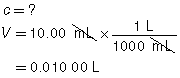
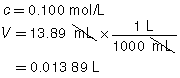
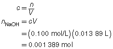
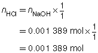
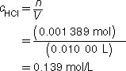

Module 7—Chemical Analysis
 Explore
Explore
 Read
Read
Titration Analysis
titration: a method of analyzing a solution by adding known amounts of a standardized solution until an endpoint is produced
A titration is a method of analyzing a solution by adding known amounts of a standardized solution until an endpoint is produced. This laboratory procedure is used to determine the concentration of a solute in a solution being tested. In Lesson 1 you studied the limiting reagent and how it influences the predictions made using stoichiometry. A titration involves the careful addition of one reactant to another to determine the exact point where one reactant becomes excess.
Read page 328 of “8.4 Titration Analysis” in your textbook to become familiar with some of the terms used in a titration analysis.
Watch and Listen
View the video “Performing a Titration.” Pay careful attention to how the equipment is used during this procedure.
Review the bolded terms shown on page 328 of your textbook. Match each of the following terms from the video with one of the terms from your textbook.
Term from the Video |
|
Term from the Textbook |
1. green solution colour |
|
A. titrant |
2. standard solution of 0.100-mol/L NaOH(aq) |
|
B. sample |
3. 10.00-mL acid solution |
|
C. endpoint |
Watch and Listen Answers
- C
- A
- B
Reading the level of the solution in the burette is an essential skill. To practise this skill, view the video a second time, pausing the video so you are able to read the solution level in the burette at the start and at the end of the trial. Compare the burette readings you made to the values stated in the video.
In the “Performing a Titration” video, you watched NaOH(aq) solution being added to an HCl(aq) acid solution until a permanent change in the colour of the bromothymol blue indicator occurred. How does the colour change for bromothymol blue signal the detection of the end of the reaction?
Recall from your study in Module 4 that bromothymol blue appears yellow in acidic solutions and blue in basic solutions. As shown in the video, a titration proceeds until an endpoint is reached. In this case, the excess NaOH(aq) added after all the acid in the sample had reacted creates a basic solution, causing the indicator to change colour.
 Try This
Try This
The following data was collected during the titration shown in the “Performing a Titration” video. Use this data to determine the concentration of HCl(aq) in the sample tested.
Reactant |
HCl(aq) |
NaOH(aq) |
Location |
Erlenmeyer flask |
burette |
Volume |
10.00 mL |
13.89 mL |
Concentration of Reactant |
? |
0.100 mol/L |
Try This Answer
HCl(aq) |
+ |
NaOH(aq) |
→ |
H2O(l) |
+ |
NaCl(aq) |
|  |  |
 

The concentration of the HCl(aq) solution is 0.139 mol/L.